Creating announcements on conference
Follow the instructions below to create announcements for your attendees of your event to see.#
Please note, this information is for Admins Only!
This feature is only available for the Professional Conference Package.
Event administrators can now make announcements via the software for all attendees to see.
It will display as a pop-up, and you can set a time for it to go live.
These announcements can be used for several purposes, such as a last-minute session schedule change. A quick announcement on the software for all to view.
To make an announcement go to the Conference dashboard and click on Announcements.
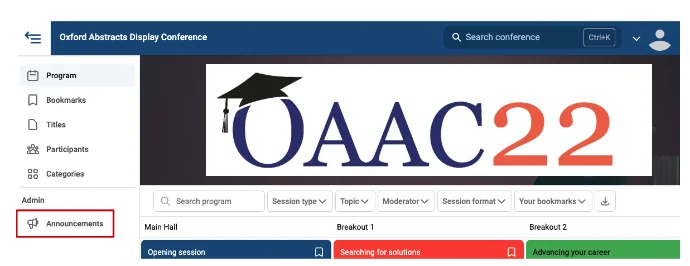
Next, click on Create Announcement.
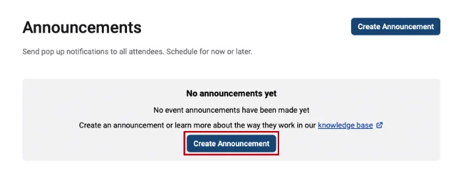
First, you’ll need to type your announcement message in the Announcement Box, then scroll down to complete the rest of the announcement.
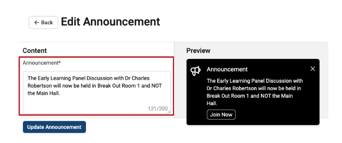
Next, add a web link (if required), for example, a Zoom link to the session you are changing.
Underneath this, you can write what you want the button that the attendees will click on for the link above to say. For example, Join Now.
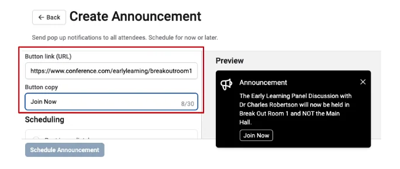
You can then either schedule the announcement to be published immediately by selecting the Post Immediately box.
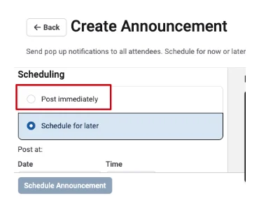
Or you can schedule the announcement to go live on a specific date and time.
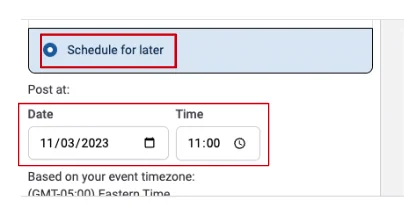
Finally, you can decide how much time you want the announcement to be visible by typing how many hours or minutes you want it to show, i.e. 2 hours 30 minutes.
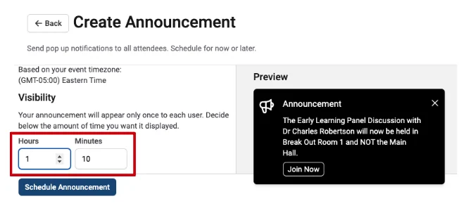
When you have finished creating your announcement, before you click the Schedule Announcement button, you can preview what the announcement will look like on the right-hand side of the screen.
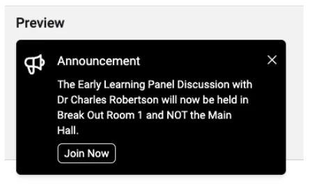
If you are happy with it, click the Schedule Announcement button.
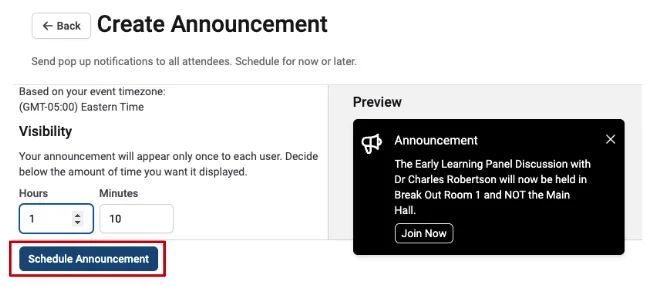
The next screen will show you all the announcements you have created and whether they are scheduled to go live or if they have been posted (finished).
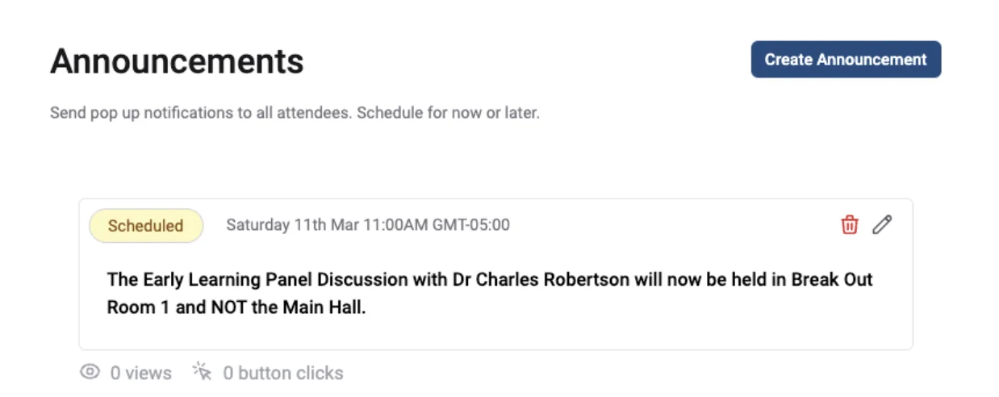
If you need to edit the announcement, click the pencil icon, make changes, and click the Update Announcement button to save your changes.
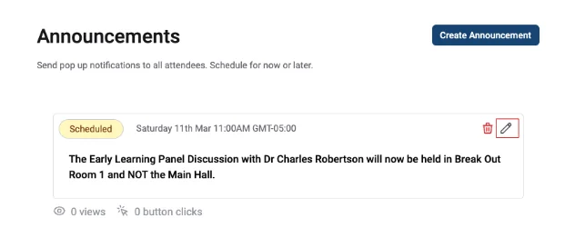
You will also be able to track how many views the announcement has received and how many button clicks it receives.
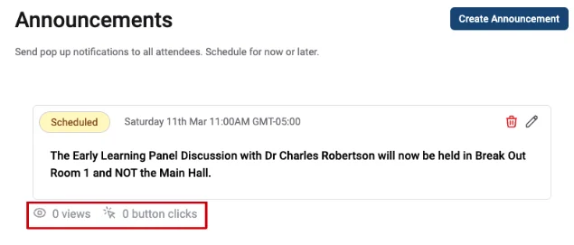
Please Note:
Old announcements may not always be able to be deleted. However, these announcements will not be visible to attendees.
Please contact our Support Team via our Contact Form if you need further assistance.
Did this page solve it?
Thanks — this helps us fix it.
Didn't solve it? Ask our support team
No question is too small, and there's no charge for asking. Raise a ticket and someone who knows the software will pick it up.